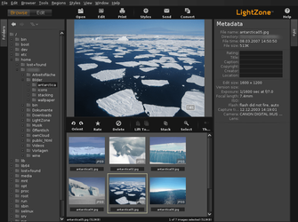
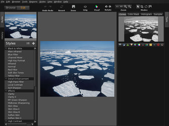

LightZone
Ausbaufähige Anleitung
Dieser Anleitung fehlen noch einige Informationen. Wenn Du etwas verbessern kannst, dann editiere den Beitrag, um die Qualität des Wikis noch weiter zu verbessern.
Anmerkung: Der Abschnitt Bedienung ist nur rudimentär vorhanden und sollte erweitert werden.
Dieser Artikel wurde für die folgenden Ubuntu-Versionen getestet:
Ubuntu 16.04 Xenial Xerus
Ubuntu 14.04 Trusty Tahr
Zum Verständnis dieses Artikels sind folgende Seiten hilfreich:
LightZone  ist ein RAW-Konverter, also ein Programm zum Bearbeiten von RAW-Fotos. Solche Bilder werden im Regelfall von hochpreisigen digitalen Kameras erzeugt und gestatten Fortgeschrittenen und Profis vollen Zugriff auf die von der Kamera erzeugten Rohdaten eines Bilds.
ist ein RAW-Konverter, also ein Programm zum Bearbeiten von RAW-Fotos. Solche Bilder werden im Regelfall von hochpreisigen digitalen Kameras erzeugt und gestatten Fortgeschrittenen und Profis vollen Zugriff auf die von der Kamera erzeugten Rohdaten eines Bilds.
Das Programm selbst hat eine längere Vorgeschichte. Ursprünglich wurde es für Windows und Mac OS X kommerziell vertrieben, während die Linux-Version eine Zeitlang kostenfrei zur Verfügung stand. Im September 2011 wurde der Vertrieb eingestellt, nachdem der Firmen-Eigentümer zu Apple gewechselt hatte. Ende 2012 kündigte Anton Kast, einer der ehemaligen Entwickler und verantwortlich für die Linux-Portierung, die Fortführung als Open-Source-Projekt an. Im Juni 2013 stand erstmals die Version 4.0.0 zur Verfügung, die funktional der letzten kommerziellen Version 3.9 entspricht, aber durch ihre höhere Versionsnummer darauf hinweisen soll, dass es sich jetzt um freie Software unter der BSD-Lizenz handelt. Die Sprache der Programmoberfläche und des integrierten Hilfesystems ist Englisch.
Der Umgang mit den im Regelfall sehr großen RAW-Dateien zieht erhöhte Systemanforderungen nach sich. Rechner mit 32-Bit-Betriebsystemen stoßen hier schnell an ihre Grenzen. Daher sind ein Mehrkern-Prozessor, ein 64-Bit-Betriebssystem und mindestens 4 GiB RAM empfehlenswert.
Voraussetzungen¶
LightZone basiert auf Java. Wie man eine Laufzeitumgebung (JRE, ab Version 7) installiert, ist im Artikel Java/Installation beschrieben. Darüber hinaus wird ein Prozessor mit SSE2 (ab Pentium 4) benötigt. Außerdem sollte man kontrollieren, ob das Paket libraw5 bereits installiert ist und es ggf. nachinstallieren.
Installation¶
 LightZone ist kein Bestandteil der offiziellen Paketquellen, kann aber über ein "Personal Package Archiv" (PPA) [1] installiert oder manuell heruntergeladen werden.
LightZone ist kein Bestandteil der offiziellen Paketquellen, kann aber über ein "Personal Package Archiv" (PPA) [1] installiert oder manuell heruntergeladen werden.
PPA¶
Thorsten Stettin (alias Otto Meier alias otto06217 alias Otto Kesselgulasch) stellt ein PPA als Paketquelle zur Verfügung.
Adresszeile zum Hinzufügen des PPAs:
ppa:otto-kesselgulasch/lightzone
Hinweis!
Zusätzliche Fremdquellen können das System gefährden.
Ein PPA unterstützt nicht zwangsläufig alle Ubuntu-Versionen. Weitere Informationen sind der  PPA-Beschreibung des Eigentümers/Teams otto-kesselgulasch zu entnehmen.
PPA-Beschreibung des Eigentümers/Teams otto-kesselgulasch zu entnehmen.
Damit Pakete aus dem PPA genutzt werden können, müssen die Paketquellen neu eingelesen werden.
Nach dem Aktualisieren der Paketquellen erfolgt die Installation über das folgende Paket [2]:
lightzone (ppa)
 mit apturl
mit apturl
Paketliste zum Kopieren:
sudo apt-get install lightzone
sudo aptitude install lightzone
Manuell¶
Seit Mitte September 2013 kann die aktuelle (Entwickler-)Version nur noch nach einer kostenlosen Registrierung über die Projektseite heruntergeladen werden (diese soll als Spamschutz dienen). Weitere Informationen sind den Registration notes zu entnehmen.
Bedienung¶
Der Programmstart [3] erfolgt bei Ubuntu-Varianten mit einem Anwendungsmenü über den Eintrag "Grafik -> LightZone" oder den Befehl lightzone.
Konzepte: LightZone
Zone Mapper (Zonensystem)
Bearbeiten von Bildern mit 16-Bit-Farbtiefe?
nichtdestruktives Editieren
Stapelverarbeitung (Batch-Betrieb)
HDR-Werkzeuge
bei Bearbeitung bestehender JPG-Dateien werden diese mit dem Zusatz _lzn versehen gespeichert
verwendete Ordner:
~/LightZone/ - Vorlagen u.a.
Vorlagen (Styles): ~/Lightzone/Templates/*.lzt
~/.java/.userPrefs/com/lightcrafts/ - Konfigurationsdaten
~/.lzncache/ - temporäre Dateien
|  |
| Dateibrowser mit Bildvorschau |
|  |
| Bearbeitungsfenster |
Alternativen¶
Zu seiner Zeit war das plattformunabhängige LightZone der Konkurrenz deutlich voraus. Inzwischen hat sich dieser Abstand deutlich verringert und mit Darktable und RawTherapee stehen mindestens zwei ebenbürtige Alternativen zur Verfügung. Zum Linux-Urgestein zählt dagegen UFRaw, dass als Erweiterung für GIMP immer noch eine gewisse Rolle spielt.
Links¶
Beispielvideos
- Youtube-Channel
umfangreiche Dokumentation zur Version 3.5
auf Helpmax.netHow to Install LightZone 4.1
- Blogbeitrag, 05/2015Praxistest: LightZone 4, RAW-Konverter mit Zonensystem
 - Photoscala, 07/2013
- Photoscala, 07/2013Licht und Schatten - Professionelle Raw-Verarbeitung für Linux
- LinuxUser, 08/2007Video-Tutorials
von Thierry MartinsRAW-Fotografie
 Übersichtsartikel
Übersichtsartikel
- Erstellt mit Inyoka
-
 2004 – 2017 ubuntuusers.de • Einige Rechte vorbehalten
2004 – 2017 ubuntuusers.de • Einige Rechte vorbehalten
Lizenz • Kontakt • Datenschutz • Impressum • Serverstatus -
Serverhousing gespendet von